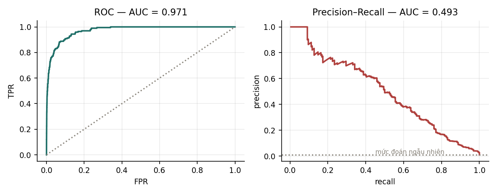

8Đánh giá mô hình phân loại#
Một mô hình chỉ tốt hay xấu so với một thước đo, và chọn sai thước đo thì so sánh mô hình cũng sai theo. Thước đo quen thuộc nhất, độ chính xác, đặc biệt dễ đánh lừa khi lớp cần quan tâm là lớp hiếm, mà trong thực tế lớp cần quan tâm thường là lớp hiếm: giao dịch gian lận, thiết bị sắp hỏng, bệnh hiếm gặp. Ta bắt đầu bằng một thí nghiệm cho thấy độ chính xác có thể chọn nhầm một mô hình vô dụng, rồi xây dựng các thước đo thay thế, và kết thúc bằng những lỗi chia dữ liệu làm mọi thước đo mất ý nghĩa.
8.1Hạn chế của độ chính xác#
Độ chính xác (accuracy) là tỉ lệ điểm được phân loại đúng. Thước đo này dễ hiểu nhưng có một điểm yếu lớn: nó không phân biệt các loại lỗi. Trên dữ liệu có lớp dương hiếm, điểm yếu này đủ để dẫn tới kết luận sai.
Thí nghiệm dựng 20 000 điểm dữ liệu, trong đó 0,98% thuộc lớp dương, và một bộ phân loại cho điểm số cao hơn một chút với lớp dương. Bảng dưới so sánh bộ phân loại này ở ba ngưỡng với một bộ phân loại luôn đoán lớp âm.
| Bộ phân loại | Độ chính xác | Precision | Recall | F1 |
|---|---|---|---|---|
| Luôn đoán lớp âm | 0,9902 | không xác định | 0,0000 | 0,0000 |
| Ngưỡng 2,6 | 0,9900 | 0,4928 | 0,5204 | 0,5062 |
| Ngưỡng 1,0 | 0,8408 | 0,0559 | 0,9592 | 0,1056 |
| Ngưỡng −1,0 | 0,1699 | 0,0117 | 1,0000 | 0,0231 |
Bộ phân loại luôn đoán lớp âm không phát hiện được ca dương nào, nhưng có độ chính xác 0,9902, cao hơn bộ phân loại ở ngưỡng 2,6 (0,9900) vốn phát hiện được hơn một nửa số ca dương. Nếu chọn mô hình theo độ chính xác, ta sẽ chọn mô hình vô dụng. Các mục sau giới thiệu những thước đo phân biệt được hai mô hình này.
8.2Ma trận nhầm lẫn, precision và recall#
Với bài toán hai lớp, mỗi dự đoán rơi vào một trong bốn ô.
| Dự đoán dương | Dự đoán âm | |
|---|---|---|
| Thật sự dương | TP (dương thật) | FN (âm giả) |
| Thật sự âm | FP (dương giả) | TN (âm thật) |
Bảng này gọi là ma trận nhầm lẫn (confusion matrix), và các thước đo phổ biến đều tính từ bốn ô của nó.
Định nghĩa 8.1 (Precision, recall, F1)
Recall còn gọi là độ nhạy (sensitivity) hoặc tỉ lệ dương thật (true positive rate, TPR). Tỉ lệ dương giả (false positive rate) là .
Người mới hay nhầm precision với recall. Cách nhớ đúng bản chất là đặt mỗi thước đo thành một câu hỏi. Precision trả lời câu hỏi: trong những trường hợp mô hình báo là dương, bao nhiêu phần đúng là dương? Mẫu số của nó là những gì mô hình khẳng định. Recall trả lời câu hỏi: trong những trường hợp thật sự dương, mô hình phát hiện được bao nhiêu phần? Mẫu số của nó là những gì thực tế có.
Ví dụ 8.1
Trên 1 000 giao dịch có 50 giao dịch gian lận, một mô hình cho TP = 40, FN = 10, FP = 20, TN = 930. Khi đó precision , recall , và . Độ chính xác là , trong khi mô hình luôn đoán "không gian lận" đã đạt .
Precision và recall đánh đổi nhau qua ngưỡng quyết định. Bảng ở Mục 8.1 cho thấy khi hạ ngưỡng từ 2,6 xuống 1,0 rồi −1,0, recall tăng từ 0,52 lên 0,96 rồi 1,00, còn precision giảm từ 0,49 xuống 0,056 rồi 0,012. Không có ngưỡng nào tốt nhất cho cả hai, và chọn ngưỡng là một quyết định dựa trên chi phí của từng loại lỗi: bỏ sót một ca gian lận tốn bao nhiêu so với chặn nhầm một giao dịch hợp lệ.
là trung bình điều hoà của precision và recall. Trung bình điều hoà bị kéo mạnh về phía giá trị nhỏ hơn, nên chỉ cao khi cả hai cùng cao: ở ngưỡng −1,0, recall bằng 1,00 nhưng chỉ bằng 0,023. Khi hai loại lỗi có chi phí khác nhau, ta dùng dạng tổng quát
trong đó coi recall quan trọng hơn precision, như trong sàng lọc bệnh, còn coi precision quan trọng hơn.
8.3Đường cong ROC và đường cong precision–recall#
Mỗi ngưỡng cho một cặp giá trị thước đo. Để đánh giá mô hình mà không phụ thuộc vào một ngưỡng cụ thể, ta quét mọi ngưỡng và vẽ đường cong. Đường cong ROC vẽ TPR (recall) theo FPR khi ngưỡng thay đổi. Diện tích dưới đường cong, ROC-AUC, bằng xác suất một điểm dương chọn ngẫu nhiên được mô hình cho điểm số cao hơn một điểm âm chọn ngẫu nhiên; bộ phân loại ngẫu nhiên có ROC-AUC bằng 0,5, bộ phân loại hoàn hảo có ROC-AUC bằng 1. Đường cong precision–recall (PR) vẽ precision theo recall, và diện tích dưới nó, PR-AUC, thường tính bằng average precision. PR-AUC của bộ phân loại ngẫu nhiên bằng tỉ lệ lớp dương trong dữ liệu.

Trên dữ liệu của Mục 8.1, hai con số này là
Chúng chênh nhau nhiều vì mẫu số của FPR là toàn bộ lớp âm:
Lớp âm ở đây có 19 804 điểm, nên thêm 100 dương giả chỉ làm FPR tăng khoảng 0,005, gần như không thấy trên đồ thị ROC. Cũng 100 dương giả đó có thể làm precision giảm mạnh, vì mẫu số của precision chỉ gồm những điểm được báo là dương, và số điểm này nhỏ.
Để đọc đúng hai con số, cần so với mốc của bộ phân loại ngẫu nhiên. ROC-AUC = 0,9715 được so với mốc 0,5. PR-AUC = 0,4931 được so với mốc bằng tỉ lệ lớp dương, tức 0,0100: mô hình tốt hơn đoán ngẫu nhiên khoảng 49 lần, nhưng vẫn còn nhiều dương giả so với số ca dương thật.
Từ đó có thể chọn thước đo theo bài toán. Khi hai lớp tương đối cân bằng và cả hai đều quan trọng, ROC-AUC là thước đo phù hợp. Khi lớp dương hiếm và điều cần quan tâm là chất lượng của các cảnh báo dương, PR-AUC phản ánh thực tế tốt hơn, vì ROC-AUC có thể rất cao trong khi phần lớn cảnh báo là sai (Davis và Goadrich, 2006; Saito và Rehmsmeier, 2015).
8.4Đánh giá bài toán nhiều lớp#
Với lớp, precision, recall và F1 được tính cho từng lớp theo cách "lớp đó so với tất cả các lớp còn lại", rồi gộp lại theo một trong ba cách trong bảng dưới.
| Cách gộp | Tính thế nào | Khi nào dùng |
|---|---|---|
| Macro | tính thước đo cho từng lớp rồi lấy trung bình không trọng số | mọi lớp quan trọng như nhau, kể cả lớp hiếm |
| Micro | cộng dồn TP, FP, FN của mọi lớp rồi tính một lần | quan tâm hiệu năng tổng thể; lớp đông chi phối kết quả |
| Weighted | trung bình có trọng số theo số điểm của mỗi lớp | cân bằng giữa hai cách trên, nhưng che khuất lớp hiếm |
Với bài toán phân loại đơn nhãn nhiều lớp, tức mỗi điểm thuộc đúng một lớp, micro-F1 bằng đúng độ chính xác. Lý do là mỗi dự đoán sai đồng thời là một dương giả của lớp được dự đoán và một âm giả của lớp thật, nên tổng FP bằng tổng FN, kéo theo micro-precision bằng micro-recall bằng tỉ lệ dự đoán đúng. Báo cáo micro-F1 cho bài toán đơn nhãn vì vậy không cung cấp thêm thông tin gì so với độ chính xác.
8.5Chia dữ liệu và rò rỉ dữ liệu#
Mọi thước đo ở chương này chỉ có ý nghĩa nếu tập kiểm tra phản ánh đúng dữ liệu mà mô hình sẽ gặp khi sử dụng. Rò rỉ dữ liệu (data leakage) là khi thông tin không có ở thời điểm dự đoán lọt vào quá trình huấn luyện, làm kết quả đánh giá tốt hơn thực tế. Có ba dạng rò rỉ hay gặp nhất.
Dạng thứ nhất là chuẩn hoá trước khi chia dữ liệu. Tính trung bình và độ lệch chuẩn trên toàn bộ dữ liệu rồi mới chia tập là đã đưa thông tin của tập kiểm tra vào tập huấn luyện. Mọi bước tiền xử lý có tham số, như chuẩn hoá, điền giá trị thiếu hay chọn đặc trưng, chỉ được khớp trên tập huấn luyện, rồi áp dụng nguyên vẹn cho tập kiểm tra.
Dạng thứ hai là chia ngẫu nhiên dữ liệu có yếu tố thời gian. Với bài toán dự báo, mô hình chỉ được dùng quá khứ để dự đoán tương lai, nhưng chia ngẫu nhiên cho phép nó học từ các điểm nằm sau thời điểm cần dự đoán. Cách đúng là chia theo thời gian: huấn luyện trên giai đoạn trước, kiểm tra trên giai đoạn sau.
Dạng thứ ba là chia ngẫu nhiên khi dữ liệu có nhóm. Nếu một bệnh nhân có nhiều lần khám, hoặc một người dùng có nhiều phiên, các bản ghi của cùng một người rất giống nhau. Chia ngẫu nhiên theo bản ghi khiến mô hình được kiểm tra trên chính những người nó đã thấy, nên cần chia theo nhóm, tức theo bệnh nhân hay theo người dùng.
Cả ba lỗi làm kết quả đánh giá tốt lên giả tạo, và thường chỉ bị phát hiện khi mô hình đã được đưa vào sử dụng. Chương 4 của MLOps trình bày cách bảo đảm đặc trưng được tính đúng theo thời điểm để tránh dạng rò rỉ thứ hai.
8.6Tóm tắt#
Độ chính xác không phân biệt các loại lỗi, nên trên dữ liệu có 0,98% lớp dương, một mô hình luôn đoán lớp âm đạt độ chính xác cao hơn một mô hình phát hiện được nửa số ca dương. Ma trận nhầm lẫn tách bốn loại kết quả; precision hỏi trong những gì mô hình báo dương bao nhiêu là đúng, còn recall hỏi trong những gì thật sự dương mô hình phát hiện được bao nhiêu, và hai thước đo đánh đổi nhau qua ngưỡng. ROC-AUC có thể rất cao trên dữ liệu mất cân bằng, như 0,9715 so với PR-AUC 0,4931 trong thí nghiệm, vì mẫu số của FPR là toàn bộ lớp âm; khi lớp dương hiếm, PR-AUC phản ánh thực tế tốt hơn. Với nhiều lớp, cách gộp macro, micro hay weighted quyết định lớp hiếm được coi trọng tới đâu. Mọi con số chỉ có ý nghĩa khi dữ liệu được chia đúng, không rò rỉ qua chuẩn hoá, thời gian hay nhóm.
Thước đo đúng cho biết mô hình tốt tới đâu trên dữ liệu mới. Chương 9 xét lý do một mô hình có thể rất tốt trên dữ liệu huấn luyện mà kém trên dữ liệu mới, và cách kiểm soát điều đó.
Tự kiểm tra
5 câu. Chọn đáp án để xem ngay lời giải thích.
1Trên dữ liệu có 0,98% lớp dương, bộ phân loại luôn đoán lớp âm có độ chính xác bao nhiêu?
Vì sao: Chọn mô hình theo độ chính xác trên dữ liệu mất cân bằng dẫn tới chọn mô hình vô dụng. Nên dùng precision, recall, F1 hoặc PR-AUC.2Vì sao ROC-AUC có thể rất cao trên dữ liệu mất cân bằng dù phần lớn cảnh báo là sai?
Vì sao: Ở Mục 8.3, cùng mô hình và dữ liệu cho ROC-AUC 0,9715 nhưng PR-AUC chỉ 0,4931. Precision có mẫu số là số điểm được báo dương nên nhạy với dương giả.3PR-AUC của bộ phân loại đoán ngẫu nhiên bằng bao nhiêu?
Vì sao: ROC-AUC của bộ đoán ngẫu nhiên luôn là 0,5. Vì vậy PR-AUC 0,4931 cần so với mốc 0,0100 chứ không so với 0,5.4Lỗi nào làm kết quả đánh giá tốt lên một cách giả tạo?
Vì sao: Trung bình và độ lệch chuẩn tính trên cả dữ liệu chứa thông tin của tập kiểm tra. Mọi bước tiền xử lý có tham số chỉ được khớp trên tập huấn luyện.5Với bài toán phân loại đơn nhãn nhiều lớp, micro-F1 bằng đại lượng nào?
Vì sao: Mỗi dự đoán sai vừa là một dương giả của lớp được dự đoán vừa là một âm giả của lớp thật, nên tổng FP bằng tổng FN và micro-precision bằng micro-recall bằng độ chính xác.
Đã trả lời 0/5